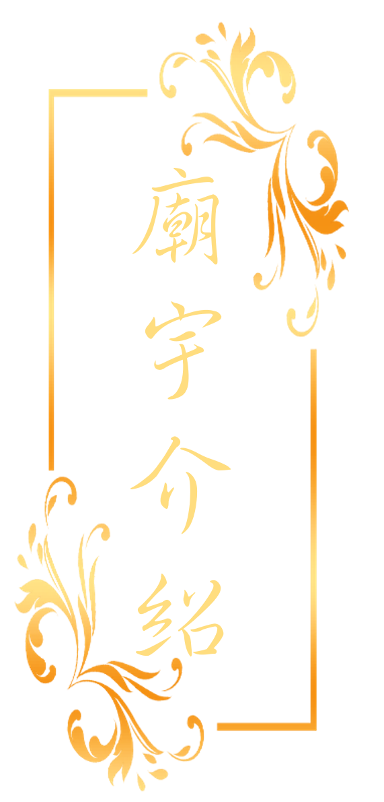

|  |
 |
高雄意誠堂關帝廟至今已有123年歷史，最早可追朔自1899年。有位意仔的務農老伯興建一座草寮神壇，當時眾先賢們為了感念意伯仔對於意誠堂文衡聖帝與眾神的誠心敬奉及創建意誠堂的功勞，因此正式將廟名取名為「意誠堂」。此外，高雄意誠堂的文衡聖帝，就是意伯興建高雄意誠堂時的開基神尊。
高雄意誠堂前於2003年正式舉行入火安座大典，另奉高雄意誠堂關聖帝君之聖示，於凌霄寶殿殿外之中庭興建全國唯一的「通天八卦亭」，同年並正名為「高雄意誠堂」。於2015年時，正式將高雄意誠堂的全名確立為「高雄意誠堂關帝廟」。
高雄意誠堂歷史悠久、香火鼎盛。逢年過節或適逢高雄意誠堂舉辦祭典法會慶典活動期間，每天都有許多香客前來參拜。而意誠堂裡較為有名的是乞龜活動，在民俗信仰中，龜代表著長壽與祥和，民眾在祭祀時也常用龜的圖示與祭品等，而龜的意思也有著返回的意思，乞龜在台灣也算是民間常見的祭龜活動，多數在元宵或是祭神慶典時舉辦，民眾藉由乞龜來祈求平安健康。
乞龜這項傳統文化也經由先人的努力保持才可以流傳至今，高雄的乞龜活動也是由高雄意誠堂關帝廟的元宵乞龜活動傳播到全國，可加上許多的宣傳與
創新的想法點子，讓乞龜活動可以加進新元素更具特色性，可以讓高雄的乞龜活動成為一種傳統之一，也可以使得全國各地的乞龜活動能更活躍，發揮傳統文化的精神與參與民俗活動的熱誠。